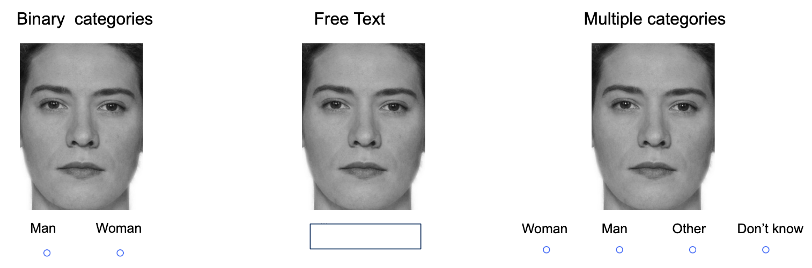

The Impact of Response Options on Gender Categorization of Faces
Published
April 22, 2024
Abstract
Gender is not a binary category, yet much of gender categorization research continues to treat it as such in terms of response options. This study comprises two experiments that challenge the binary gender norm by exploring alternative response options to measure gender categorization. In Experiment 1 (N=66), we compared one-dimensional and two-dimensional scales for gender categorization of a diverse set of morphed faces. We found that regardless of the response options used, participants treated gender categorically. In other words, participants accentuated their categorizations of womanhood and manhood, even when response options did not frame them as opposites. In Experiment 2 (N = 100) we compared traditional binary response options with multiple categories and free-text answers. The results suggested that while non-binary options such as “non-binary” and “I don’t know” led to categorizations beyond the binary framework in about half of the participants, free-text options did not elicit similar results. Despite the opportunity to categorize faces beyond the binary, the predominant categorizations remained as ‘woman’ or ‘man’. We conclude that while inclusive response options can facilitate acknowledgment of gender diversity, they do not fundamentally alter the binary perception of gender.
# Seed for random number generationset.seed(42)knitr::opts_chunk$set(cache.extra = knitr::rand_seed)
Many transgender and nonbinary (TNB) people experience gender as flexible, fluid, diffuse, and not bounded by the typical binary of women and men (Hyde et al. 2018; Richards et al. 2016). Unlike cisgender people - who identify with their assigned sex at birth - transgender people identify with a gender different from their assigned sex at birth (Levitt and Ippolito 2014). Moreover, many transgender people identify as nonbinary, which can be either an identity in and of itself or an umbrella term for a wide variety of gender identities other than woman or man (e.g. genderqueer, agender, genderfluid) (Monro 2019).
An early challenge to the norm of binary measurement of gender in psychology came from Sandra Bem in the ´70s (Bem 1974). She devised a scale that measured gender as a psychological trait, treating femininity and masculinity as two separate constructs. This scale allowed for combinations of gender which challenged previous binary conceptions. Such combinations included “androgynous”, which meant scoring high on both femininity and masculinity; and agender, which meant scoring low on both. Characteristically for research of its time, Bem still largely accepted the binary gender framework. In treating gender as a psychological trait, for example, the BSRI implicitly assumed all respondents were women or men.
A later group of challenges to the gender binary in psychology emerged in the 2010s and onward. These researchers, often drawing from feminist and queer scholarship (e.g. Butler 1999), were explicit about the need for psychology to include trans and non-binary gender identities (Hyde et al. 2018; Morgenroth and Ryan 2018; Richards et al. 2016). Saperstein and Westbrook (2021), for example, suggested that surveys measuring gender include a range of response options, such as non-binary, other, trans man, agender, and more. Lindqvist, Sendén, and Renström (2020) suggested an open text entry where participants can fill in their gender in an open-ended format. The free text response has the advantage of being completely unconstrained, allowing participants to enter any category, including categories which may not have occurred to the researchers. Moreover, the acceptable terms sometimes shift over time, as more marginalized voices are heard. The term “transsexual” for example, has been widely used and seen as acceptable, but is now understood to be stigmatizing (APA manual). A free text avoids this issue.
Both the initial and later challenges to the gender binary in psychology primarily suggested ways to measure respondents’ own gender identity. This emphasis is understandable as gender identity is a commonly reported demographic variable. But gender is frequently also measured in terms of participants’ categorizations of others. Because self-categorization and categorization of others are different processes, however, the best measurement of self-categorization may not be the best measurement of the categorization of others.
Measuring gender categorization of others
Research on how people perceive and categorize the gender of others has used both dimensional scales as well as discrete categories, but in both cases almost exclusively treats gender as a binary category. It is fairly common, for example, to use the one-dimensional approach, where participants rate the gender of others as a single dimension, from masculine to feminine. Much of this research explores evolutionary and other reasons for gender in faces, correlating one-dimensional categorization of facial gender with other traits, such as attractiveness (Little and Hancock 2002), and distinctiveness (O’Toole et al. 1998).
Another common approach tasks people to categorize faces according to a set of response options decided by the researchers, almost invariably “woman” and “man”. Studies using this method have shown that people rapidly and automatically categorize gender (Habibi and Khurana 2012; Jung, White, and Powanda 2019). This in turn indicates that gender is a salient category that determines how people evaluate others on traits, such as agreeableness, dominance, etc (Stolier and Freeman 2017).
Moreover, participants categorize faces categorically (Campanella, Chrysochoos, and Bruyer 2001). This phenomenon has been observed when participants categorize faces that have been morphed to vary from feminine to masculine. Categorizations of these morphed faces were accentuated so that for example a 60% female morph was rated as a woman by close to 80% of participants (Campanella, Chrysochoos, and Bruyer 2001). Observing categorical effects for any stimuli suggests that people treat that stimuli as two separate categories (Simanova et al. 2016). The observation of a categorical effect for gender suggests that people think of gender as a strict binary consisting of women and men only.
However, this research has rarely considered the risk that the structure of response options could communicate certain ideas about gender to participants. A one-dimensional scale implies that gender can vary on a continuum. It also places masculinity and femininity at the endpoints of the scales, so that a higher rating of femininity is by definition a lower rating of masculinity. This in turn suggests that someone cannot embody femininity and masculinity at the same time, indeed, that the two concepts are opposites. Binary response options consisting of woman/female and man/male only suggest that those are the only two categories that exist. On the other hand, two-dimensional scales and categories that include non-binary response options suggest the opposite, that femininity and masculinity are not mutually exclusive and that a multiplicity of genders exists. In other words, no matter which type of response options are used, ideas are being communicated to participants, potentially influencing their responses. Most recommendations suggest taking great care not to influence participants (Nichols and Maner 2008), but the effects of gender response options are rarely considered.
Another aspect of gender categorizations of others is that complete certainty is not possible. This is because many trans and non-binary individuals do not have a prototypical androgynous gender expression (Richards et al. 2016). Indeed many non-binary and even binary trans people may appear similar to their assigned gender at birth. Therefore, if a person aims to be inclusive, abstaining from categorizing until more information is available is always the safest option when encountering a face. However, this aspect of gender categorization has received very little attention from researchers.
The purpose of Study 1 was to investigate the influencing effect of one and two-dimensional response options by investigating whether participants’ responses are categorical. A categorical effect is a useful outcome in this context because it suggests participants treat gender as consisting of only two categories: women and men. Drawing inspiration from Bem (1974) we compare gender categorization measured using one-dimensional response options and two-dimensional response options. If one-dimensional scales influence participants to think of gender as binary and opposites and two-dimensional scales don’t do this, there should be a reduced categorical effect for two-dimensional scales. We tested two research questions; would participants respond categorically to faces (Research Question 1) and would a one-dimensional rating scale elicit stronger categorical responses than two-dimensional (Research Question 2)?
The purpose of Study 2 was to investigate categorization using non-binary gender response options. We included multiple categories beyond women and men, as suggested by among others Westbrook and Saperstein and we also included a free text as suggested by Lindqvist et al. Study 2 was mainly interested in how the two non-binary options compared to each other and how the presence of non-binary options affected the categorization of binary gender. As non-binary options have been promoted by feminist and LGBTQ+ activists, their inclusion might have more generalized effects on binary categorization. Therefore, study 2 also investigated the categorization of women and men.
Study 1
Method
Participants
Code
# Get subjects informationsubs <- d %>%filter(condition =="md"| condition =="sd" ) %>%mutate(age =as.numeric(Age_1),gender =substr(Gender_1, 1,1) ) %>%count(id, age, gender, condition)
Swedish participants (N = 66) took part in the study in a lab at a Stockholm University campus (Mage= 37.36, SDage = 14.14, Range = 18 - 73). Self-identified gender was measured using an open-ended text box (33 women, 35 men and 2 participants who did not indicate gender). Participants were monetarily compensated for their time (100 sek). All participants were informed that participation was voluntary and gave written consent to participate in the study.
Stimuli
The experiment included Black, Asian, and White faces from the London Face Database (L. M. DeBruine and Jones 2017)and the Chicago Face Database(Ma, Correll, and Wittenbrink 2015) morphed with on Webmorph (L. DeBruine 2018). We matched the faces of women and men using the codebook provided by the researchers, ensuring that the women were rated similar levels of feminine as the men were rated masculine. The morphs were made in 7 steps, from completely feminine to completely masculine. We defined the facial gender as the degree of the female face present in the morph. In other words, a 33% face was slightly tilted toward the man, a 50% face was an even mixture and a 100% face consisted only of the woman’s face. Because there were 18 pairs morphed in 7 steps, the total number of faces was 126.
Figure 1: Example of seven-step morphing spectrum
Design and procedure
The experiment used a between-participants design. The two conditions were the one-dimensional (control condition), and two-dimensional (experimental) conditions. Participants were randomly allocated into one of the two response option conditions (N1d = 28, N2d = 38).
Participants completed the experiment on a computer in a quiet room. Each trial consisted of a face accompanied by the question “How would you gender categorize this person?”. In the one-dimensional control condition, participants rated gender based on a single continuum with the anchors marked “woman” and “man”. In the two-dimensional condition, participants rated each face twice on two different continua, in the “woman” continuum, the anchors were marked “not woman” and “woman”; in the “man” continuum the anchors were marked “not man” and “man”. The separate continuua were presented on different trials and the order of trials was completely randomized.
]
Data analysis
We used R (Version 4.2.2; R Core Team 2022) and the R-packages brms(Version 2.18.0; Bürkner 2017, 2018, 2021), papaja(Version 0.1.1; Aust and Barth 2022), and tidyverse(Version 1.3.2; Wickham et al. 2019). We fit the data to Bayesian mixed-effects models to test the categorical effects. In all models, morph level and response options were included as fixed effects. Additionally, all models included varying intercepts for both participants and trials and varying slopes for facial gender The pattern of scores was non-linear, meaning any linear model would probably be misspecified. Therefore, to reduce the complexity of the model, facial femininity was modeled as an ordered factor with seven levels, corresponding to each of the seven morphing steps.
All participants completed the experiment and were included in the analyses. The one-dimension condition included 28 participants and the two-dimension condition included 38 participants.
Descriptive statistics
First, we examined the relationship between ratings of “woman” and “man” in the multiple dimensions condition. These were highly correlated (R = 0.86). Second, we examined whether participants responded categorically to faces (Research Question 1). Individual-level (thin lines) and group mean (thick lines) responses are visualized in Figure 3. If participants respond only to the morph of faces, the lines should be a straight diagonal. Instead, Figure 3 shows that most participants display a non-linear S-shape and this was also the pattern of the group means.
Participant level and mean ratings of faces in One-dimensiona and two-dimensional conditions
Code
#Wrangle data againtmp <- d %>%filter(condition =="sd"| condition =="md") %>%mutate(f_rating =as.numeric(categorization) %>%ifelse(scale =="f", ., 100- .),scale_new =ifelse(scale =="f"| scale =="m", scale, "sd"),fem =as.factor(fem)) fit_dimensional_interaction <-brm(f_rating ~0+ fem:condition + (1+ fem|id) + (1+fem|face), family =gaussian(link ='identity'), prior =c(prior(normal(50,50), class ="b"),#prior(normal(50,50), class = "Intercept"),prior(exponential(1), class ="sd"),prior(lkj(1), class ="cor"),prior(exponential(1), class = sigma)),data = tmp,iter =4000, warmup =1000,cores =4,sample_prior =TRUE,file ="models/fit_dimensional_stair_factor.5")# carrying out the hypothesis testh_dim_33 <-hypothesis(fit_dimensional_interaction, "fem33.33:conditionmd= fem33.33:conditionsd" )h_dim_67 <-hypothesis(fit_dimensional_interaction, "fem66.67:conditionmd= fem66.67:conditionsd" )h_categ <-hypothesis(fit_dimensional_interaction, "fem66.67:conditionmd- fem33.33:conditionmd = fem66.67:conditionsd- fem33.33:conditionsd" )h_dim_67 <-hypothesis(fit_dimensional_interaction, "fem66.67:conditionmd= fem66.67:conditionsd" )
Inferential Statistics
To further test this, we calculated the difference between the mean ratings when facial gender was 33 and 67. If participants respond linearly, this difference should be 34. Instead, in both the one-dimensional condition (M1D = 59.58, CI1D = [53.65, 65.26]) and the two-dimensional condition (M2D = 58.75, CI = [53.65, 65.26]) this difference far exceeded 34 and the narrow credible intervals suggest these measures were precisely estimated. We interpret this to mean that participants responded categorically. However, Figure 3 also suggests that there was a degree of individual variation, and some participants were more categorical than others in their ratings.
Finally, we tested whether the categorical perception was reduced in the two-dimension condition compared to the one-dimension condition (Research Question 2). The two conditions were not meaningfully different (Difference = -0.83, CI = [-5.57, 7.24], BF01= 30.47). This suggests that categorical perception was not reduced by two-dimensional response options.
Discussion
Participants responded categorically when rating faces in terms of gender. Additionally, two-dimensional response options did not reduce this effect. Indeed a highly binary view of gender was present and participants treated womanhood and manhood as opposites even though the scale would allow them to be more flexible. However, this scale only implicitly challenged the binary, as no diverse gender options were present.
Study 2
Study 2 tested a wider range of response options that explicitly challenge the gender binary. These were adapted from common ways to measure participants’ self-categorization of gender (Lindqvist, Sendén, and Renström 2020; Saperstein and Westbrook 2021). Study 2 compared a control condition consisting of standard binary response options to two alternatives: a third gender option (such as ‘non-binary’ or ‘other’) and an open text box for participants to type in their response.
Swedish participants (N = 66) took part in the study in a lab at a Stockholm University campus (Mage= 37.36, SDage = 14.14, Range = 18 - 73). Self-identified gender was measured using an open-ended text box as recommended by (Lindqvist, Sendén, and Renström 2020) (56 women, 47 men 2 participants did not indicate gender). All participants were informed that participation was voluntary and gave written consent to participate in the study.
Stimuli
The stimuli were identical to those of Study 1. In short, the stimuli comprised a multiracial set of faces morphed to vary in terms of facial gender. We defined facial gender as the degree of the female face present in the morph. In other words, a 33 face was slightly tilted toward the man, a 50 face was an even mixture and a 100 consisted only of the woman’s face. Because there were 18 pairs morphed in 7 steps, the total number of faces was 126.
Design and Procedure
The experiment used a between-participants design. There were three response options conditions, the binary categories, free text, and multiple categories and conditions (see Figure 2). In the binary categories condition, the response options consisted of two categories: “woman” and “man”. In the free text condition, the response options consisted of an open text box. In the multiple categories condition, the response options consisted of four categories: “woman”, “man”, “other” and “I don’t know”.
Participants completed the experiment on a computer in a quiet room. Each trial consisted of a face accompanied by the question “How would you gender categorize this person?” After being allocated to one of the three conditions, participants categorized 126 faces according to the response options in their condition.

Figure 2: Sample trial from each of the three conditions
The outcome was responses to the categorization task. For analysis purposes, these were aggregated in the following ways:
Other categorizations represented the trials where participants categorized faces as any other category than woman or man. In the multiple categories conditions, this was computed by dichotomizing the variable so “other” = 1 and all other responses = 0. In the free text condition, it was computed by summing variations of “other” and “non-binary” and dichotomizing this new index.
I don’t know responses represented trials where participants did not categorize any gender category. In the multiple categories conditions, this was computed by dichotomizing the variables so “I don’t know” = 1 and all other responses = 0. In the free text condition, responses were computed by summing variations of “unsure” and “I don’t know” and dichotomizing this new index.
Binary categorization represented only the responses that were either woman (coded as 1) or man (coded as 0). All other responses were removed from this dataset (this meant removing a total of 226 responses from 20 participants).
Data analysis
We fit the data to Bayesian mixed-effects models to test the categorical effects. In all models, facial gender and response option condition were included as fixed effects. Additionally, all models included varying intercepts for both participants and trials and varying slopes for morph level.
Results
Participant Flow
Categorizations outside the binary
Most faces were categorized as women or men, by most participants (see Figure @ref(fig:descriptives-1)). That said, participants did categorize faces outside of this binary in the multiple categories condition, as Figure @ref(fig:descriptives-1)), and most such categorizations were made in response to androgynous faces.
Code
# make figure 1d %>%mutate(fem = fem ) %>%filter(condition =="ft"| condition =="xb"| condition =="mc") %>%#select correct conditionsfilter(id !=124) %>%#misunderstood the task, categorized by racegroup_by(fem, race, condition) %>%mutate(categorization =recode(categorization, #yes, this is pretty horrendous code, I haven't had a chance to sit down and clean it up yet."1"="Woman", "Woman"="Woman", "wman"="Woman", "woman"="Woman", "female"="Woman", "Female "="Woman", "Female"="Woman", "Fenale"="Woman", "women"="Woman", "woman "="Woman", "femLE"="Woman", "FEmale"="Woman", "Femalw"="Woman", "Fwmalw"="Woman", "Female "="Woman", "woman"="Woman", "Woman"="Woman", "feMale"="Woman", "fermale"="Woman", "wman"="Woman", "Femae"="Woman", "f"="Woman", "F"="Woman", "female "="Woman","2"="Man", "man"="Man","Male"="Man", "male"="Man", " Male"="Man", "M"="Man", "nmale"="Man", "male "="Man", "nale"="Man", "ale"="Man", "M"="Man", "m"="Man", "MALE"="Man","3"="Other", "Nonbinary"="Other", "Non Binary "="Other", "Non binary "="Other", "nonbinary"="Other", "4"="Don't know" ),condition =recode(condition, "ft"="Free text", "xb"="Binary Categories", "mc"="Multiple Categories"))%>%count(categorization) %>%filter(!is.na(categorization))%>%ggplot(aes(x=fem, y=n, fill=factor(categorization, levels =c("Man", "Other", "Don't know", "Woman")))) +geom_bar(stat="identity", position ="fill") +ggtitle("Gender Categorizations by Participants")+facet_wrap(~condition) +scale_x_continuous(breaks =c(0, 17, 33, 50, 66, 83, 100)) +scale_y_continuous(breaks =c(0, 0.17, 0.33, 0.50, 0.66, 0.83, 1)) +ylab("Proportion of responses" ) +xlab("Morph level") +#scale_fill_discrete(name = "Response") +#scale_fill_viridis_d(name = "Response")scale_fill_manual( values =c("#D2B48C", "#FF5733", "#3498DB", "#FFDD88"))+guides(fill =guide_legend(title ="Categorization"))+geom_hline(yintercept=0.50, linetype="dashed", color ="darkgrey")+theme_minimal()
Gender Categorizations by Participants
There was a very clear difference between conditions; which is visible in Figure 4. Figure four illustrates how many categorizations beyond the binary participants made. Each dot represents one participant, red dots represent the number of “other” categorizations made by one participant and blue dots represent the number of “Don’t know” responses. Grey dots represent participants who only categorized faces as women or men. In the Free Text condition, only two participants made any other categorization than woman and man, whereas more than half did so in the Multiple Categories condition (see Figure 4).
Code
library(ggpubr)tmp %>%group_by(id, condition) %>%#filter(condition == "mc") %>% summarise(sum_nb =sum(nb ==1),sum_dk =sum(dk ==1)) %>%mutate(zeroes =ifelse(sum_dk ==0& sum_nb ==0 , 0, NA),more_dk =ifelse(sum_dk >0, sum_dk, NA),more_nb =ifelse(sum_nb >0, sum_nb, NA) )%>%ggplot(aes(x = condition, y = zeroes))+geom_dotplot(binaxis ="y",binwidth =1, #Count zeroes in each conditionstackdir ="center", dotsize =1, stackratio =1, fill ="gray", color ="gray") +geom_dotplot(aes(x = condition, y = more_dk, fill ="Don't Know"), #Count the dk categorizations in each conditionbinaxis ="y",binwidth =1, stackdir ="center", stackratio =1, color ="#FF5733",position =position_nudge(x =0.05)) +geom_dotplot(aes(x = condition, y = more_nb, fill ="Other"), #Cout the nb categorizations in each conditionbinaxis ="y",binwidth =1, stackdir ="center", stackratio =1, color ="#3498DB",position =position_nudge(x =-0.05))+scale_y_continuous(name ="N categorizations")+#coord_flip()+scale_fill_manual(name ="Categorization", values =c("#FF5733", "#3498DB"))+scale_color_manual(name ="Categorization", values =c("#FF5733", "#3498DB"))+theme_pubclean()
tmp %>%group_by(id, condition) %>%#filter(condition == "mc") %>% summarise(nb =sum(nb ==1),dk =sum(dk ==1)) %>%pivot_longer(cols =c(nb, dk), names_to ="outcome", values_to ="n") %>%ggplot(aes(x = outcome, y = n, fill = condition, color = condition)) +geom_dotplot( #Count the dk categorizations in each conditionbinaxis ="y",binwidth =1, stackdir ="center", stackratio =1, dotsize =0.5)+theme_pubclean()+facet_wrap(~condition)
`summarise()` has grouped output by 'id'. You can override using the `.groups`
argument.
Code
# make figure 1d %>%mutate(fem = fem ) %>%filter(condition =="ft"| condition =="xb"| condition =="mc") %>%#select correct conditionsfilter(id !=124) %>%#misunderstood the task, categorized by racegroup_by(fem, race, condition) %>%mutate(categorization =recode(categorization, #yes, this is pretty horrendous code, I haven't had a chance to sit down and clean it up yet."1"="Woman", "Woman"="Woman", "wman"="Woman", "woman"="Woman", "female"="Woman", "Female "="Woman", "Female"="Woman", "Fenale"="Woman", "women"="Woman", "woman "="Woman", "femLE"="Woman", "FEmale"="Woman", "Femalw"="Woman", "Fwmalw"="Woman", "Female "="Woman", "woman"="Woman", "Woman"="Woman", "feMale"="Woman", "fermale"="Woman", "wman"="Woman", "Femae"="Woman", "f"="Woman", "F"="Woman", "female "="Woman","2"="Man", "man"="Man","Male"="Man", "male"="Man", " Male"="Man", "M"="Man", "nmale"="Man", "male "="Man", "nale"="Man", "ale"="Man", "M"="Man", "m"="Man", "MALE"="Man","3"="Other", "Nonbinary"="Other", "Non Binary "="Other", "Non binary "="Other", "nonbinary"="Other", "4"="Don't know" ),condition =recode(condition, "ft"="Free text", "xb"="Binary Categories", "mc"="Multiple Categories"))%>%count(categorization) %>%filter(!is.na(categorization))%>%ggplot(aes(x=fem, y=n, fill=factor(categorization, levels =c("Man", "Other", "Don't know", "Woman")))) +geom_bar(stat="identity", position ="fill") +ggtitle("Gender Categorizations by Participants")+facet_wrap(~condition) +scale_x_continuous(breaks =c(0, 17, 33, 50, 66, 83, 100)) +scale_y_continuous(breaks =c(0, 17, 33, 50, 66, 83, 100)) +ylab("Proportion of responses" ) +xlab("Morph level") +#scale_fill_discrete(name = "Response") +#scale_fill_viridis_d(name = "Response")scale_fill_manual( values =c("#D2B48C", "#FF5733", "#3498DB", "#FFDD88"))+guides(fill =guide_legend(title ="Categorization"))+geom_hline(yintercept=0.50, linetype="dashed", color ="darkgrey")+theme_minimal()
Gender Categorizations by Participants
Code
#Fit models using brms.#Can be run with premade file to save time. To reproduce in full, comment out the "file" argumentNull <-brm(bbcat ~1+ (1|id) + (1|face:fem), family =bernoulli(link ='logit'), prior =c(prior(normal(0,3), class ="Intercept"), # weakly regularizing priorsprior(cauchy(0,3), class ="sd") ),data = tmp,iter =6000, warmup =2000,chains =4,cores =4,sample_prior =TRUE,file ="models/binary_null" )#Fitting the main effects modelMain_Effect <-brm(bbcat ~0+ condition + fem + (1|id) + (1|face:fem), family =bernoulli(link ='logit'), prior =c(prior(normal(0,3), class ="b", coef ="conditionmc"), #again, weakly regularizing priorsprior(normal(0,3), class ="b", coef ="conditionft"),prior(cauchy(0,3), class ="sd") ),data = tmp,iter =4000, warmup =1000,chains =4,cores =4,sample_prior =TRUE,file ="models/binary_mfx" )#fitting the interaction modelInteraction <-brm(bbcat ~0+ condition:fem + (1|id) + (1|face:fem), family =bernoulli(link ='logit'), prior =c(prior(normal(-3,3), class ="b"),prior(cauchy(0,3), class ="sd")),data = tmp,iter =6000, warmup =2000,chains =4,cores =4,sample_prior =TRUE,file ="models/binary_int.6" )
Categorization within the binary
When people categorize faces beyond the binary such categorization also affects the categorization of faces as men or women. For example, the categorization of faces as non-binary could theoretically decrease either “woman” or “man” categorization, if for example “other” categorizations consistently replaced “woman” categorization. We therefore investigated how inclusive response options changed participants’ binary categorizations.
We treated the binary categories condition as a neutral baseline against which the other two conditions were tested. The evidence indicated that faces were categorized as women and at equal rates in the Multiple Categories and Binary Categories conditions (OR = 0.68, CI =[0.4, 1.17], BF01= 6.07, corresponding to moderate evidence). The evidence also indicated that faces were categorized as women and men at equal rates the Free text and Binary Categories condition (OR = 1.03, CI =[0.6, 1.78], BF01= 15.58). In other words, neither the free text nor the multiple categories condition changed the pattern of categorization of women and men compared to the binary categories condition.
We also compared the relationship between facial gender and binary categorization (i.e. the slope of facial gender) across the conditions. The slope of facial gender on binary categorizations was almost the same in the multiple categories and binary categories conditions (Difference = 0, CI =[-0.02, 0.03], BF01= 394.93). The effect of facial femininity on woman categorizations almost was the same in the free text and binary categories (Difference > 0.001, CI =[-0.02, 0.02], BF01= 394.93).
Discussion
Experiment 2 indicated that participants categorize beyond the binary when response options include more options than women and men only. However, the free text option did not differ from the binary option. Thus, the multiple categories condition, with its explicitly stated non-binary options seems to act as reminders to participants. Furthermore, categorization within the binary was not skewed by the addition of multiple catetgories or the free text option, meaning that the ratio of women and men categorizations was still about 50/50. This did not systematically affect their overall pattern of responses in terms of woman and man categorizations.
General Discussion
In two experiments we tested how different response options influenced gender categorization. In Study 1 we compared two-dimensional scales with one-dimensional controls. We found that participants responded categorically and this was the case in both the control condition and the two-dimensional condition. In Study 2, we compared free text and multiple categories. We found that only multiple categories elicited beyond-binary responses. Compared to binary control, neither changed the pattern of categorizations of women and men.
The results are consistent with previous work on categorical perception of gender in faces(Campanella, Chrysochoos, and Bruyer 2001; Campanella et al. 2003). Participants’ exhibited a categorical pattern of responses where ratings of gender were accentuated compared to facial gender of the faces, suggesting that they had a strong impression of gender as consisting of two distinct categories. Furthermore, the two-dimensional ratings did not reduce the strength of the categorical effect. This suggests that at least in the present sample, two-dimensional response options were not enough to reduce the binary gender norms.
This differs slightly from the results of Bem (1974) who found that measuring gender as two separate scales led participants to treat gender as less binary. Moreover, where she found that masculinity and femininity were largely unrelated, we found that ratings of “woman” and “man” were strongly correlated. This is probably accounted for by the differences in outcomes measures. Bem (1974) measured gender as a psychological trait in the self, whereas we measured gender as a judgment of the physical features of others. Judging physical properties is much more influenced by external stuff.
The finding that participants use non-binary response options is consistent with the work of Saperstein and Westbrook (2021) and Lindqvist, Sendén, and Renström (2020), which has shown that including flexible response options allows participants to better express themselves. A recommendation from that literature is that open text boxes afford participants the greatest flexibility in their responses. In our study, however, that flexibility was almost never used when the response options consisted of a free text. This likely reflects the difference between TGD people categorizing their own gender and cisgender participants categorizing others.
A probable explanation for the difference between free text and multiple categories is that the multiple categories served as a visual reminder of non-binary identity. Researchers interested in the categorization of non-binary identity should be aware that these may not spring to mind unless participants are explicitly reminded of them.
Neither free text nor multiple categories impacted the categorizations of women and men. This suggests that such inclusive response options can be suitable for investigating the categorization of women and men without skewing the results or introducing noise. This is a positive finding for researchers who are primarily interested in such categorizations but do not want to contribute to the marginalization of trans and non-binary individuals.
Overall, we recommend researchers to carefully consider how they measure the categorization of others. Multiple dimensions, free text, and multiple categories and continua are all viable alternatives. If the primary research question is to investigate non-binary categorization, then multiple categories are most suitable. However, if the goal is to measure the categorization of women and men, free text or multiple categories may be equally suitable.
Conclusion
In two experiments we tested how different response alternatives affected gender categorizations. Participants were more likely to categorize faces beyond the binary when using multiple categories, including “non-binary” and “I don’t know” than when using a free text option. In comparison to self-identification questions where open-ended responses are seen as the most inclusive alternative (Lindqvist, Sendén, and Renström 2020), categorization of others benefit from response options that explicitly remind participants that not all people identify as women or men.
References
Ansara, Y Gavriel, and Peter Hegarty. 2014. “Methodologies of Misgendering: Recommendations for Reducing Cisgenderism in Psychological Research.”Feminism & Psychology 24 (2): 259–70. https://doi.org/10.1177/0959353514526217.
Aust, Frederik, and Marius Barth. 2022. papaja: Prepare Reproducible APA Journal Articles with R Markdown. https://github.com/crsh/papaja.
Bem, Sandra L. 1974. “THE MEASUREMENT OF PSYCHOLOGICAL ANDROGYNY,” 8.
Bürkner, Paul-Christian. 2017. “brms: An R Package for Bayesian Multilevel Models Using Stan.”Journal of Statistical Software 80 (1): 1–28. https://doi.org/10.18637/jss.v080.i01.
———. 2021. “Bayesian Item Response Modeling in R with brms and Stan.”Journal of Statistical Software 100 (5): 1–54. https://doi.org/10.18637/jss.v100.i05.
Butler, Judith. 1999. Gender Trouble: Feminism and the Subversion of Identity. New York: Routledge.
Campanella, S., A. Chrysochoos, and R. Bruyer. 2001. “Categorical Perception of Facial Gender Information: Behavioural Evidence and the Face-Space Metaphor.”Visual Cognition 8 (2): 237–62. https://doi.org/10.1080/13506280042000072.
Campanella, S., C. Hanoteau, X. Seron, F. Joassin, and R. Bruyer. 2003. “Categorical Perception of Unfamiliar Facial Identities, the Face-Space Metaphor, and the Morphing Technique.”Visual Cognition 10 (2): 129–56. https://doi.org/10.1080/713756676.
Carleton, R. Nicholas, Michelle McCarron, Gregory P. Krätzig, Shannon Sauer-Zavala, J. Patrick Neary, Lisa M. Lix, Amber J. Fletcher, et al. 2022. “Assessing the Impact of the Royal Canadian Mounted Police (RCMP) Protocol and Emotional Resilience Skills Training (ERST) Among Diverse Public Safety Personnel.”BMC Psychology 10 (1): 295. https://doi.org/10.1186/s40359-022-00989-0.
Cronin, Katherine A., Maureen Leahy, Stephen R. Ross, Mandi Wilder Schook, Gina M. Ferrie, and Andrew C. Alba. 2022. “Younger Generations Are More Interested Than Older Generations in Having Non-Domesticated Animals as Pets.” Edited by Simon Clegg. PLOS ONE 17 (1): e0262208. https://doi.org/10.1371/journal.pone.0262208.
D’Agostino, Maria, Helisse Levine, Meghna Sabharwal, and Al C Johnson-Manning. 2022. “Organizational Practices and Second-Generation Gender Bias: A Qualitative Inquiry into the Career Progression of U.S. State-Level Managers.”The American Review of Public Administration 52 (5): 335–50. https://doi.org/10.1177/02750740221086605.
Habibi, Ruth, and Beena Khurana. 2012. “Spontaneous Gender Categorization in Masking and Priming Studies: Key for Distinguishing Jane from John Doe but Not Madonna from Sinatra.” Edited by Attila Szolnoki. PLoS ONE 7 (2): e32377. https://doi.org/10.1371/journal.pone.0032377.
Hyde, Janet Shibley, Rebecca S. Bigler, Daphna Joel, Charlotte Chucky Tate, and Sari M. van Anders. 2018. “The Future of Sex and Gender in Psychology: Five Challenges to the Gender Binary.”American Psychologist, July. https://doi.org/10.1037/amp0000307.
Jung, Kyung Hun, Katherine R. G. White, and Sarah J. Powanda. 2019. “Automaticity of Gender Categorization: A Test of the Efficiency Feature.”Social Cognition 37 (2): 122–44. https://doi.org/10.1521/soco.2019.37.2.122.
Levitt, Heidi M., and Maria R. Ippolito. 2014. “Being Transgender: The Experience of Transgender Identity Development.”Journal of Homosexuality 61 (12): 1727–58. https://doi.org/10.1080/00918369.2014.951262.
Lindqvist, Anna, Marie Gustafsson Sendén, and Emma A. Renström. 2020. “What Is Gender, Anyway: A Review of the Options for Operationalising Gender.”Psychology & Sexuality, February, 1–13. https://doi.org/10.1080/19419899.2020.1729844.
Little, Anthony C., and Peter J. B. Hancock. 2002. “The Role of Masculinity and Distinctiveness in Judgments of Human Male Facial Attractiveness.”British Journal of Psychology 93 (4): 451–64. https://doi.org/10.1348/000712602761381349.
Ma, Debbie S., Joshua Correll, and Bernd Wittenbrink. 2015. “The Chicago Face Database: A Free Stimulus Set of Faces and Norming Data.”Behavior Research Methods 47 (4): 1122–35. https://doi.org/10.3758/s13428-014-0532-5.
Morgenroth, Thekla, and Michelle K. Ryan. 2018. “Gender Trouble in Social Psychology: How Can Butler’s Work Inform Experimental Social Psychologists’ Conceptualization of Gender?”Frontiers in Psychology 9 (July). https://doi.org/10.3389/fpsyg.2018.01320.
Nichols, Austin Lee, and Jon K. Maner. 2008. “The Good-Subject Effect: Investigating Participant Demand Characteristics.”The Journal of General Psychology 135 (2): 151–66. https://doi.org/10.3200/GENP.135.2.151-166.
O’Toole, Alice J., Kenneth A. Deffenbacher, Dominique Valentin, Karen McKee, David Huff, and Hervé Abdi. 1998. “The Perception of Face Gender: The Role of Stimulus Structure in Recognition and Classification.”Memory & Cognition 26 (1): 146–60. https://doi.org/10.3758/BF03211378.
R Core Team. 2022. R: A Language and Environment for Statistical Computing. Vienna, Austria: R Foundation for Statistical Computing. https://www.R-project.org/.
Richards, Christina, Walter Pierre Bouman, Leighton Seal, Meg John Barker, Timo O Nieder, and Guy T’Sjoen. 2016. “Non-Binary or Genderqueer Genders.”Int Rev Psychiatry . 28(1): 95–102.
Saperstein, Aliya, and Laurel Westbrook. 2021. “Categorical and Gradational: Alternative Survey Measures of Sex and Gender.”European Journal of Politics and Gender 4 (1): 11–30. https://doi.org/10.1332/251510820X15995647280686.
Simanova, Irina, Jolien C. Francken, Floris P. de Lange, and Harold Bekkering. 2016. “Linguistic Priors Shape Categorical Perception.”Language, Cognition and Neuroscience 31 (1): 159–65. https://doi.org/10.1080/23273798.2015.1072638.
Stolier, Ryan M., and Jonathan B. Freeman. 2017. “A Neural Mechanism of Social Categorization.”The Journal of Neuroscience 37 (23): 5711–21. https://doi.org/10.1523/JNEUROSCI.3334-16.2017.
Wickham, Hadley, Mara Averick, Jennifer Bryan, Winston Chang, Lucy D’Agostino McGowan, Romain François, Garrett Grolemund, et al. 2019. “Welcome to the tidyverse.”Journal of Open Source Software 4 (43): 1686. https://doi.org/10.21105/joss.01686.

 ]
]